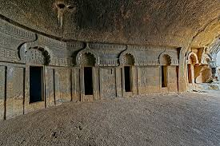
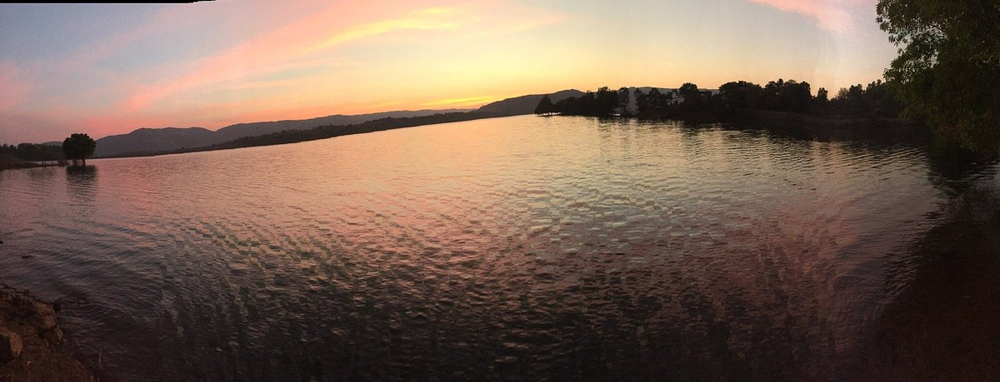
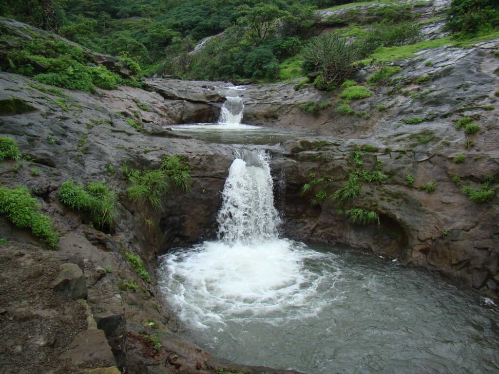
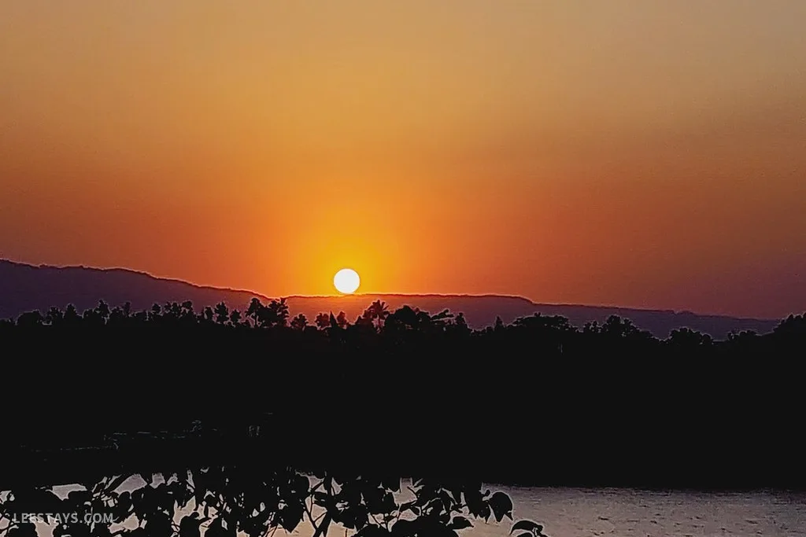
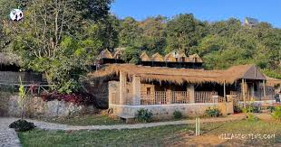

Bhira Dam: A Serene Escape
Bhira Dam is a picturesque dam located near Kamshet, known for its serene ambiance and scenic beauty.
Fun Fact:
~It is one of the largest dams in Maharashtra and offers stunning views of the surrounding hills!
Things to Explore at Bhira Dam:
-
The Scenic Views:
Marvel at the breathtaking views of the dam and the surrounding hills.
-
The Water Activities:
Enjoy boating and fishing in the calm waters of the dam.
-
The Local Cuisine:
Savor local delicacies available at nearby eateries.
-
The Photography:
Capture stunning photographs of the dam and its surroundings.
-
The Peaceful Ambiance:
Relax and unwind in the tranquil environment around the dam.
Why Visit Bhira Dam?
!Because it’s not just a dam, but a serene escape into nature’s tranquility!

Kamshet Caves: A Historical Marvel
Kamshet Caves are ancient rock-cut caves located near Kamshet, known for their historical significance and stunning architecture.
Fun Fact:
~These caves date back to the 1st century BC and are a testament to ancient Indian craftsmanship!
Things to Explore at Kamshet Caves:
-
The Rock-Cut Architecture:
Admire the intricate carvings and sculptures adorning the cave walls.
-
The Ancient Temples:
Visit the ancient temples inside the caves dedicated to various deities.
-
The History:
Learn about the historical significance of the caves and their role in ancient Indian culture.
-
The Scenic Views:
Enjoy panoramic views of the surrounding hills from the cave premises.
-
The Peaceful Ambiance:
Experience the serene ambiance and tranquility around the caves.
Why Visit Kamshet Caves?
!Because it’s not just a cave, but a historical marvel that offers a glimpse into India’s glorious past!

Kamshet Lake: A Tranquil Retreat
Kamshet Lake is a serene lake located near Kamshet, known for its tranquil ambiance and scenic beauty.
Fun Fact:
~It is surrounded by lush greenery and offers a perfect spot for relaxation and picnics!
Things to Explore at Kamshet Lake:
-
The Scenic Views:
Marvel at the picturesque views of the lake and the surrounding hills.
-
The Water Activities:
Enjoy boating, kayaking, and fishing in the calm waters of the lake.
-
The Local Cuisine:
Savor local delicacies available at nearby eateries.
-
The Photography:
Capture stunning photographs of the lake and its surroundings.
-
The Peaceful Ambiance:
Relax and unwind in the tranquil environment around the lake.
Why Visit Kamshet Lake?
!Because it’s not just a lake, but a tranquil retreat that offers a perfect escape into nature’s beauty!

Kamshet Paragliding: An Aerial Adventure
Kamshet is renowned for its paragliding activities, offering an exhilarating experience with stunning aerial views.
Fun Fact:
~It is one of the best places in India for paragliding, attracting adventure enthusiasts from all over!
Things to Explore during Paragliding:
-
The Scenic Views:
Enjoy breathtaking views of the Western Ghats and the lush green valleys below.
-
The Thrill of Flight:
Experience the adrenaline rush as you glide through the sky.
-
The Safety Gear:
Learn about the safety measures and equipment used during paragliding.
-
The Local Guides:
Experience guided flights with trained professionals for a safe adventure.
-
The Photography:
Capture stunning aerial photographs to cherish the memories.
Why Experience Paragliding in Kamshet?
!Because it’s not just an adventure, but a chance to see the world from a whole new perspective!

Kamshet Waterfalls: A Natural Wonder
Kamshet Waterfalls are a series of stunning waterfalls located near Kamshet, known for their natural beauty and serene ambiance.
Fun Fact:
~These waterfalls are a popular spot for picnics and nature walks, especially during the monsoon season!
Things to Explore at Kamshet Waterfalls:
-
The Scenic Views:
Marvel at the picturesque views of the waterfalls cascading down the rocks.
-
The Nature Trails:
Explore various nature trails that lead to hidden viewpoints and picnic spots.
-
The Local Cuisine:
Savor local delicacies available at nearby eateries.
-
The Photography:
Capture stunning photographs of the waterfalls and their surroundings.
-
The Peaceful Ambiance:
Relax and unwind in the tranquil environment around the waterfalls.
Why Visit Kamshet Waterfalls?
!Because it’s not just a waterfall, but a natural wonder that offers a perfect escape into nature’s beauty!

Kamshet Sunset: A Magical Experience
Kamshet is known for its breathtaking sunsets, offering a magical experience for visitors.
Fun Fact:
~The sunsets here are often accompanied by vibrant hues of orange and pink, creating a picturesque view!
Things to Explore during Sunset:
-
The Scenic Views:
Enjoy panoramic views of the sunset over the Western Ghats.
-
The Photography:
Capture stunning photographs of the sunset and the surrounding landscapes.
-
The Local Cuisine:
Savor local delicacies available at nearby eateries while enjoying the sunset.
-
The Peaceful Ambiance:
Experience the serene ambiance and tranquility around Kamshet during sunset.
-
The Evening Activities:
Engage in evening activities like bonfires and stargazing after sunset.
Why Experience Sunset in Kamshet?
!Because it’s not just a sunset, but a magical experience that leaves you in awe of nature’s beauty!

Kamshet Village: A Cultural Delight
Kamshet Village is a quaint village located near Kamshet, known for its rich culture and traditions.
Fun Fact:
~The village is home to various festivals and cultural events that showcase the local heritage!
Things to Explore in Kamshet Village:
-
The Local Culture:
Experience the vibrant culture and traditions of the local community.
-
The Festivals:
Participate in local festivals and events that celebrate the rich heritage of the area.
-
The Local Cuisine:
Savor traditional dishes and local delicacies available at village eateries.
-
The Handicrafts:
Explore local handicrafts and souvenirs made by skilled artisans.
-
The Scenic Beauty:
Enjoy the picturesque views of the village surrounded by lush greenery and hills.
Why Visit Kamshet Village?
!Because it’s not just a village, but a cultural delight that offers a glimpse into the rich heritage of Maharashtra!